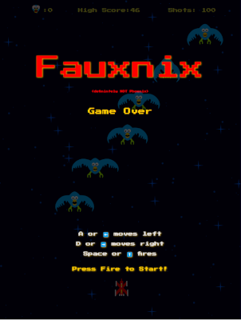
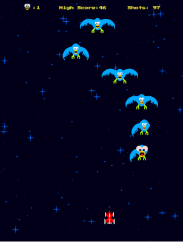
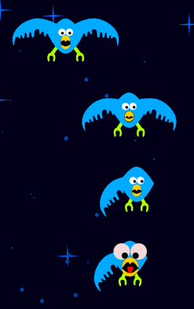

Research Projects

Fauxnix Title Screen
Fauxnix
You can see the live version here - FauxnixThe source code for this game can be seen here - on GitHub.
My primary goals with this project was to:
- further my knowledge of React
- provide a sample of my work in GitHub
- dive deep into experimenting with SVG and manipulating them
- have some fun doing something I've never done before
To keep it simple, I changed some of the mechanics of the game and came up with a silly story to explain the premise (seen here). This allowed me to pare the game and mechanics down to something simple and accomplishable in a fairly short time for my portfolio. I also didn't want to re-create the whole game since that would likely also have gotten me in trouble.
The graphics were created in Inkscape and imported into a react component. To compensate for screen size differences, I created a scaler function that multiplies each coordinate by a value determined by the screen size. Here the main important thing was to be absolutely certain all graphics were drawn in the same scale.

Fauxnix Play Screen
The React Components in this project are mostly class components - the reasons why I did this was:
- I wanted constructors that were only called 1x per page refresh when the game is spinning up.
- The components needed to be self-contained and self-managing whenever possible and class components allowed use of "this" to keep track of each instance variable.
For example, the birds are the most complex when it comes to sub-movements. When the birds move their wings, they're doing so in a way that is contained in the bird class, since the game state doesn't need to know and isn't relevent to the action on screen. Since the bird class is getting refreshed every 10 millisconds I rotate the wings, store the timestamp in the class instance, then wait for a time to pass before I update the rotation again. The same technique was applied to the eyes, and the beaks. This allowed for a beautiful "hands-off" approach to the coding in them.
One of the trickiest aspects of this game was handling the initial canvas sizing. This took a bit of trial-and-error to get it "just right". When the game loads, I calculate the aspect ratio of the screen where I divide the height by the width. If the ratio is greater than 1.4 I use the width to set the correct height of the canvas (to keep everything in proper porportion), otherwise I use height to then set the correct width of the game. It's a simple 15 lines of code to do this, but it took a few hours to get it just right. The result is it plays well not only on desktops, but holds up beautifully on mobile devices.

Fauxnix Birds
To allow for easy development and debugging, virtually all aspects of the game are contained in a central configuration file. How often things move, how long things wait, how far they move, and even how many bullets the ship can fire at a time are all there and can be adjusted quickly and easily. It also allowed each bird also needed to have their own "personality" since I configured aspects to have ranges where the computer to pick random numbers from. This allowed the birds to vary and appear more organic.The hit-boxing was another rather tricky aspect of the game. The hitboxes on each bird is complex since you can blow wings off or score hits. It has 3 detection zones to do this - left, hit, and right. If a ships bullet is detected on the wing zone, the wing is sent back as a hit and the game engine "blows" the wing off (by scaling it to 0). Until the wing is back to full size, the hitbox detector keeps the box for that particular wing at 0 x 0. This makes it so that a bird is easier to score a good hit on until the wing is full size. Each wing hitbox is generically assigned - it doesn't take into account how high or low each wing is flapped since that would cause a ton of needless and overly complex calculation to determine an actual hit. Using the central control file, it made it somewhat straight forward to adjust that hitbox since I could slow the flapping and movement speeds down to nearly 0. Overall I'm happy with how well it's working.
To accomodate mobile, the interface changes slightly where it renders some on-screen buttons to control the game. After my initial launch, I received some feedback about the size of the buttons so I went back and greatly increased the size.
If you have any comments or questions, please use my Contact Me section as user feedback has already played a valuable role in making this a fun project to play.